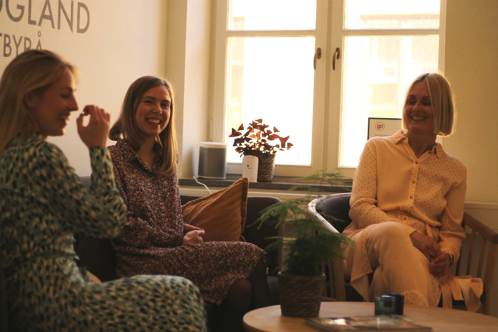

Offentlig försvarare
Erfaret och engagerat försvar genom hela brottmålsprocessen – från första förhör till dom.
↗Humanjuridik · Malmö · Hela Sverige
För dig som behöver en erfaren och engagerad advokat när livet ställs på sin spets.
Vårt uppdrag
Ulrika Rogland Advokatbyrå är en humanjuridisk byrå med särskild erfarenhet av brott mot barn, relationsvåld, sexualbrott och hedersrelaterat våld. Du får ett personligt bemötande, tydliga råd och ett orubbligt engagemang.
Rättsområden
Erfaret och engagerat försvar genom hela brottmålsprocessen – från första förhör till dom.
↗Stöd och juridisk vägledning genom hela brottmålsprocessen – från första förhör till dom.
↗Trygg och strategisk rådgivning med barnets bästa och säkerhet som tydlig utgångspunkt.
↗Erfaren representation för barn när vårdnadshavare inte kan tillvarata barnets rätt.
↗Offentligt biträde och juridiskt stöd i utsatta och komplexa livssituationer.
↗
Advokat & grundare
En ovanlig bredd från rättssalens alla perspektiv.
Efter arbete som domare, kammaråklagare och advokat har Ulrika en djup förståelse för rättsprocessens olika roller. Den erfarenheten används i varje uppdrag – med särskilt fokus på barns bästa och brottsoffers säkerhet.
Erfarenhet som gör skillnad
Ulrika har arbetat med flera uppmärksammade mål och är särskilt kunnig i säkerhetsfrågor i vårdnadsmål. Hon medverkar återkommande i samhällsdebatten för att stärka lagstiftningen och kunskapen om våld och utsatthet.
Så arbetar vi
Juridiken förklaras klart och utan onödiga omvägar.
Risker och skyddsbehov tas på allvar från första kontakten.
Noggrann förberedelse och tydliga vägval genom hela processen.
Varje klient ska få sin sak prövad opartiskt, rättssäkert och med full respekt för sina rättigheter.
Första steget
Vi tar uppdrag över hela landet. Kontakta byrån för en första bedömning av ditt ärende.